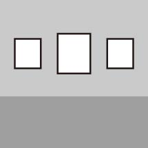
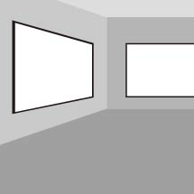
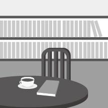
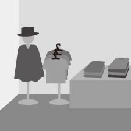
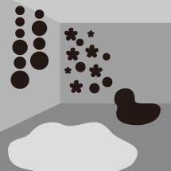
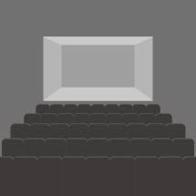

福岡
アジア
美術館
このサイトは「福岡アジア美術館」を紹介しているファンサイトです。ここはアジア近現代美術を専門に収集・展示している美術館で、本で見たことがあるような有名どころも展示されていたりします。福岡では珍しい駅直結の美術館で、アクセスのしやすさも抜群です。近くに来た時は、ぜひ立ち寄ってみてください！
美術館紹介
福岡アジア美術館のギャラリーや施設について紹介します。

アジアギャラリー
アジア近現代美術の作品が展示されている常設ギャラリーです。西洋美術とは趣の異なる、独特のエネルギーに満ちた作品が多数展示されています。「美術」とは何かを考えさせられる空間です。

企画ギャラリー
特別企画展が開催されるギャラリーです。特別企画展では、アジア近現代美術やポップカルチャーなど、幅広いテーマを扱っています。特別企画展に関連するグッズが販売されていることもあります。

アートカフェ
お茶を飲みながら本を読むことができるオープンスペースです。アジア・アート・旅といったテーマの本が揃っています。お好みのアートに「関連」する本を手に取ってみると、新しい発見があるかもしれません！

ミュージアムショップ
こちらのショップには、アート・デザイン・アジアをキーワードとした商品がたくさん揃っています。福岡アジア美術館に所蔵されている作品をモチーフとしたオリジナルグッズなども販売されています。

キッズコーナー
子供たちが自由に遊べるオープンスペースです。ベトナム出身の美術作家ティファニー・チュンがプロデュースを手がけました。ポップな色と不思議な形があふれる空間は、見ているだけで楽しくなってきます。

その他
他にも、講演会や演劇などのイベントが開催される「あじびホール」、アジアの美術作家が福岡滞在中に制作した作品などを展示する「交流ギャラリー」など、この美術館ならではの施設がまだまだあります。